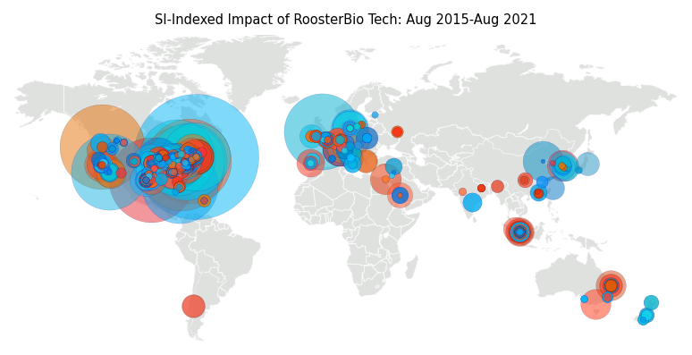
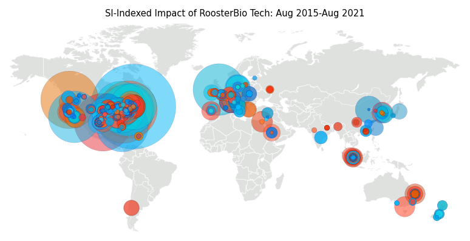

dpi = 150
dpi = 300
dpi = 600

dpi = 1200

Jessica E. Snyder
September 2021
Who uses RoosterBio tech? Researchers across the globe. Let's map it. Each circle on the map represents a paper. The larger the circle, the more times the paper has been cited (the more scientifically impactful). The gif begins Aug 2015. Each frame of the gif is a month. The colors are for fun.
dpi = 150
dpi = 300
dpi = 600
dpi = 1200